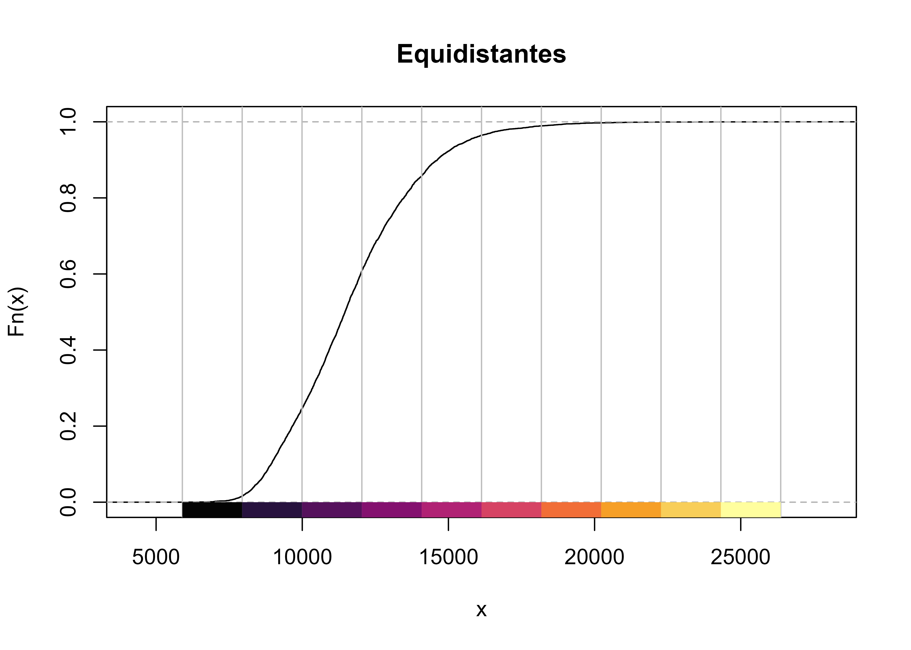
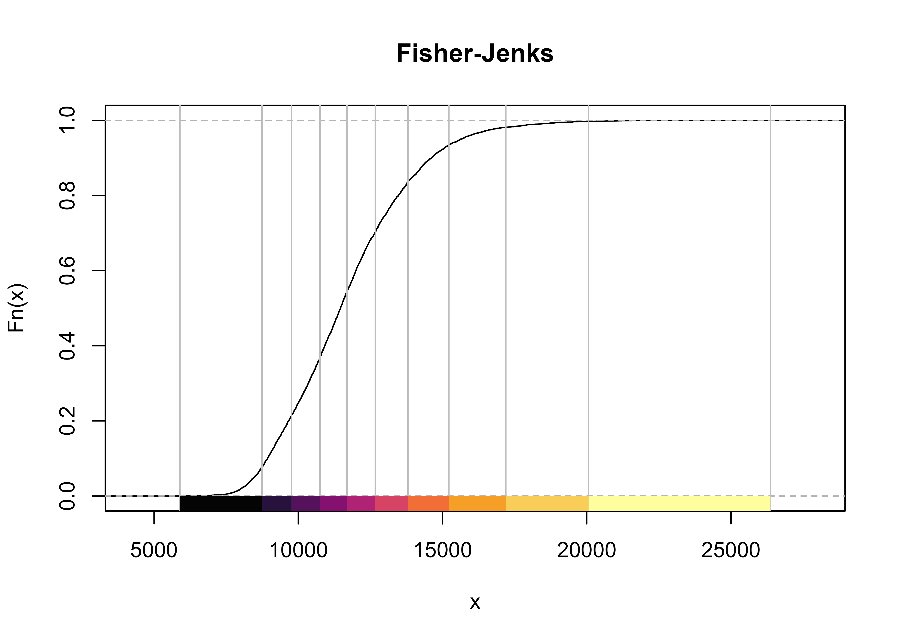

Capítulo 5 Casos prácticos
NOTA
En las siguientes aplicaciones se asume que los datos se localizan en la carpeta
data del proyecto de R-Studio en el que se esté trabajando.
Los datos pueden descargarse desde esta dirección:
https://github.com/mdsr-espacial/datos/raw/main/01_visualizacion/datos-ejercicios.zip
5.1 Caso 1: Temperatura mínima en España
Objetivo de aprendizaje
Esta sección presenta un caso de uso en el que aprenderemos a realizar las siguientes tareas básicas:
Leer datos espaciales en R.
Proyectar datos espaciales.
Graficar datos espaciales.
Para ello, se va a trabajar con los datos de temperatura mínima registradas en
España por las estaciones meteorológicas de la Agencia Estatal de Meteorología
(AEMET). Un conjunto de datos ya depurados y listos para trabajar se encuentra
en el fichero tempmin.csv. Por otra parte, la información relativa al mapeo de
España se obtendrá directamente de la librería mapSpain. Todo el análisis se
va a realizar empleando RStudio, por lo que se empezará abriendo el programa y
creando un nuevo proyecto.
Ejercicio 5.1 (Temperaturas mínimas: Creación del proyecto) Cree un proyecto para trabajar todo lo referente al caso.
Solución. Para crear un proyecto siga la secuencia: File> New Proyect y a continuación New File> R Markdown
El conjunto de datos proporcionado tempmin.csv contiene el nivel de
temperatura del aire en España entre el 6 y el 10 de Enero de
20211. Estos datos han sido descargados usando la librería
climaemet (Pizarro, Hernangómez, and Fernández-Avilés 2021) y han sido posteriormente tratados para su uso en
esta práctica.
A continuación es necesario importar la base de datos de temperatura mínima. El archivo está en formato csv, por lo cual, es un fichero de texto plano. Se pueden usar varias funciones para realizar la importación. Se emplearán los paquetes del tidyverse (Wickham et al. 2019) para realizar todo el tratamiento de datos.
Ejercicio 5.2 (Importación de los datos) Importe los datos tempmin.csv y guárdelos en un objeto llamado tmin.
Solución. Use la librería readr.
# Cada uno debe seleccionar el directorio donde tiene los datos, de ahí
# que sea conveniente trabajar con proyectos.
library(readr)
tmin <- read_csv("data/tempmin.csv")El conjunto de datos tempmin es un data frame que contiene 5 variables:
fecha: Indicando la fecha de observación.indicativo: Es el identificador de la estación de la AEMET que registró el dato.tmin: Dato de temperatura mínima registrada en cada fecha por la estación correspondiente en grados centígrados.longitud, latitud: Coordenadas geográficas de la estación
Ejercicio 5.3 (Descripción de los datos) Con la función head() describa, en forma de tabla, la información que contiene
el objeto tmin y compruebe que se corresponde con la descrita.
| fecha | indicativo | tmin | longitud | latitud |
|---|---|---|---|---|
| 2021-01-06 | 4358X | -4.7 | -5.880556 | 38.95556 |
| 2021-01-06 | 4220X | -7.0 | -4.616389 | 39.08861 |
| 2021-01-06 | 6106X | 4.7 | -4.748333 | 37.02944 |
| 2021-01-06 | 9698U | -6.8 | 0.865278 | 42.20528 |
| 2021-01-06 | 4410X | -3.4 | -6.385556 | 38.91583 |
| 2021-01-06 | 1331A | 1.0 | -7.031389 | 43.52472 |
Una de las clases de objetos espaciales más utilizada en R es sf. Sin
embargo, dependiendo del análisis que se quiera realizar hay otras muy comunes
como geodata, spatstat, etc..
A continuación se convertirá el objeto tmin (data.frame) a un objeto de la
clase geodata, una clase muy utilizada para trabajar con datos espaciales y
requerida por la librería geoR (Ribeiro Jr et al. 2020). Estos objetos contienen las
coordenadas y la variable objeto de estudio. Para mayor detalle ver
??as.geodata. Obsérvese como varía la variable a través de los ejes longitud y
latitud. Observe también la forma campaniforme de la distribución de la
variable.
Ejercicio 5.4 (Descripción de los datos (II)) Del objeto tmin seleccione el día 8 de enero de 2022 y las variables
longitud, latitud y tmin para crear el objeto y llámelo tmin_geoR. A
continuación describa analítica y gráficamente dicho objeto.
library(dplyr)
library(geoR)
tmin_geoR <- tmin %>%
filter(fecha == "2021-01-08") %>%
# Seleccionamos las columnas de interés
dplyr::select(longitud, latitud, tmin) %>%
# Y creamos el objeto geodata
as.geodata(
coords.col = 1:2,
data.col = 3
)
summary(tmin_geoR)
#> Number of data points: 211
#>
#> Coordinates summary
#> longitud latitud
#> min -9.291389 35.27639
#> max 4.215556 43.78611
#>
#> Distance summary
#> min max
#> 0.01024389 13.85144264
#>
#> Data summary
#> Min. 1st Qu. Median Mean 3rd Qu. Max.
#> -14.9000000 -4.6000000 -0.5000000 -0.6293839 3.5000000 13.6000000
plot(tmin_geoR)
Figura 5.1: Convertir data.frame a geodata
En esta ocasión, convertiremos los datos de tmin en un objeto espacial sf,
es decir, datos espaciales de tipo vector.
Los datos de tmin contienen coordenadas geográficas longitud/latitud, así que
como se vió en la Sección 3.3 el CRS a emplear ha de ser un CRS
geográfico. Usaremos el código EPSG:4326, que corresponde a coordenadas
geográficas y suele ser el habitual en este tipo de situaciones.
Ejercicio 5.5 (Convertir data.frame a sf) Del objeto tmin seleccione las variables longitud, latitud y tmin para
crear el objeto sf y llámelo tmin_sf. A continuación describa el objeto
creado.
library(sf)
tmin_sf <- st_as_sf(tmin,
coords = c("longitud", "latitud"),
crs = 4326
)
tmin_sf
#> Simple feature collection with 1066 features and 3 fields
#> Geometry type: POINT
#> Dimension: XY
#> Bounding box: xmin: -9.291389 ymin: 35.27639 xmax: 4.215556 ymax: 43.78611
#> Geodetic CRS: WGS 84
#> # A tibble: 1,066 x 4
#> fecha indicativo tmin geometry
#> * <date> <chr> <dbl> <POINT [°]>
#> 1 2021-01-06 4358X -4.7 (-5.880556 38.95556)
#> 2 2021-01-06 4220X -7 (-4.616389 39.08861)
#> 3 2021-01-06 6106X 4.7 (-4.748333 37.02944)
#> 4 2021-01-06 9698U -6.8 (0.865278 42.20528)
#> 5 2021-01-06 4410X -3.4 (-6.385556 38.91583)
#> 6 2021-01-06 1331A 1 (-7.031389 43.52472)
#> 7 2021-01-06 1690A -0.1 (-7.859722 42.32528)
#> 8 2021-01-06 8489X -8 (-0.255833 40.43333)
#> 9 2021-01-06 8025 2 (-0.494167 38.3725)
#> 10 2021-01-06 9784P -10 (0.224722 42.63)
#> # ... with 1,056 more rowsLa siguiente tarea será representar las estaciones que monitorizan la temperatura mínima en un mapa de España.
Ejercicio 5.6 (Representación espacial de la clase sf) Represente un mapa de España, con las Comunidades Autónomas de incluidas, excepto las Islas Canarias (por simplicidad)
Solución. Una opción es utilizar un paquete API que nos proporciona esta información en
formato sf, el paquete mapSpain.
library(mapSpain)
# sf object
esp <- esp_get_ccaa() %>%
# No vamos a usar Canarias en este análisis
filter(ine.ccaa.name != "Canarias")
plot(esp$geometry) # Dibujamos el mapa de España menos las Islas CanariasFigura 5.2: Mapa de España (Sin Canarias)
Como se comentó en la Sección 3.3, cuando se emplean datos geográficos provenientes de varias fuentes, es necesario asegurarse de que ambos objetos están usando el mismo CRS.
Ejercicio 5.7 (Comprobar el CRS de los datos) ¿Tengo el Sistema de referencia de coordenadas (CRS) de las estaciones de monitoreo en la misma proyección que el contorno de España? Compruébelo.
st_crs(tmin_sf) == st_crs(esp)
#> [1] FALSESe ha comprobado que no lo están, por lo que hay que proyectar las coordenadas a un CRS común.
Ejercicio 5.8 (Cambiar (proyectar) CRS) Proyecte las coordenadas de los objetos tmin_sf y esp al CRS de referencia
de tmin_sf. Compruébelo.
esp2 <- st_transform(esp, st_crs(tmin_sf))
st_crs(tmin_sf) == st_crs(esp2)
#> [1] TRUEPara dibujar las estaciones de monitoreo con el contorno de España, existen varias opciones de paquetes, ggplot2 (Wickham 2016) (paquete de referencia en representaciones gráficas), tmap (Tennekes 2018) o mapsf (Giraud 2022) (estos dos últimos especializados en mapas temáticos).
Ejercicio 5.9 (Mapa con ggplot2) Represente, con el paquete ggplot2, las estaciones de monitorero de AEMET en la Península Ibérica.
library(ggplot2)
ggplot(esp2) +
# Para graficar objetos sf debemos usar geom_sf()
geom_sf() +
geom_sf(data = tmin_sf) +
theme_light() +
theme(
plot.title = element_text(
size = 12,
face = "bold"
),
plot.subtitle = element_text(
size = 8,
face = "italic"
)
)
Figura 5.3: Estaciones de AEMET en la Península Ibérica
Una vez representadas las coordenadas, es decir, las estaciones de monitoreo
dónde se ha medido la variable temperatura mínima tmin, el siguiente paso será
representar el valor que toma la variable en esas coordenadas. La base tmin
contiene información temporal para para varios días, por lo que, como este
análisis es meramente espacial se elegirá un día que se fijará para todo el
análisis.
Ejercicio 5.10 (Representar la temperatura mínima en España) Representamos la variable temperatura mínima tmin para el día 8 de enero de
2021. Guarde la base de datos espacial para ese día en un objeto de nombre
tmin_8enero.
# Seleccionaremos los datos correspondientes al 8 de enero de 2021
tmin_8enero <- tmin_sf %>%
filter(fecha == "2021-01-08")
# Mapa temático en el que se representan los valores de temperatura mínima
# registrados en cada estación mediante un código de colores
plot(tmin_8enero["tmin"],
pch = 8
)
Figura 5.4: Mapa de puntos con temperatura mínima (8-enero-2021)
El mapa ha quedado muy bien, pero quizá los colores y el formato elegido no sean los más adecuados para este tipo de representaciones…
Ejercicio 5.11 (Representar la temperatura mínima con ggplot2) Utilice los parámetros espaciales de los que dispone, las coordenadas y el contorno de España para graficar y contar la historia de Filomena adecuadamente.
# Especificamos la paleta de color a utilizar
cortes <- c(-Inf, seq(-20, 20, 2.5), Inf)
colores <- hcl.colors(15, "PuOr", rev = TRUE)
ggplot() +
geom_sf(
data = esp2,
fill = "grey99"
) +
geom_sf(
data = tmin_8enero,
aes(color = tmin),
size = 4,
alpha = .7
) +
labs(color = "Temp. mín") +
scale_color_gradientn(
colours = colores,
breaks = cortes,
labels = function(x) {
paste0(x, "º")
},
guide = "legend"
) +
theme_light() +
theme(
plot.title = element_text(
size = 12,
face = "bold"
),
plot.subtitle = element_text(
size = 8,
face = "italic"
)
)
Figura 5.5: Mapa completo con temperatura mínima (8-enero-2021)
La visión que ofrece el la Fig. 5.5 de Filomena es muy informativa, vemos como los datos nos cuentan la historia de lo que ocurrió ese día. La pena es que no existan estaciones de monitoreo en todos los puntos de España para conocer el valor de la temperatura mínima en cualquier lugar del país. ¿Podríamos tener un mapa de interpolación para tener una estimación de la temperatura mínima en las partes donde la AEMET no tiene estación de monitoreo?
Tal y como se avanzó en el Capítulo 4, parece lógico pensar que aquellos puntos que estén cerca tendrán valores similares. Por tanto, tomemos ventaja de las propiedades de la dependencia espacial y utilicemos un método de interpolación sencillo, en este caso un método determinista, la Distancia Inversa Ponderada, comúnmente conocido por su acrónimo inglés IDW (Inverse Distance Weighted), el cual es uno de los métodos más simples para llevar para llevar a cabo una interpolación espacial.
En este tipo de análisis espacial, es crucial que el CRS sea el apropiado. En este caso, ya se definió el CRS como un CRS geográfico (es decir, usando coordenadas de longitud y latitud). Sin embargo, para el ejercicio de interpolación es más adecuado usar un CRS local (que provoca pocas deformaciones en la proyección de España) y en alguna unidad de distancia, como metros (ya se vio en la Sección 3.3 que en los CRS geográficos las unidades son grados).
Ejercicio 5.12 (Obtención de CRS sugerido para un conjunto de datos) Utilice el paquete crsuggest para observar los CRS sugeridos y, si es necesario, transforme la proyección de los datos.
library(crsuggest)
sugiere <- suggest_crs(tmin_8enero, units = "m", limit = 5)
# Usamos la sugerencia del paquete
crs_sugerido <- st_crs(sugiere[1, ]$crs_proj4) # Madrid
esp3 <- st_transform(esp2, crs_sugerido)
tmin_8enero3 <- st_transform(tmin_8enero, crs_sugerido)Una vez solucionado el problema de las proyecciones, antes de llevar a cabo la interpolación, es necesario generar una malla que representará las celdas de las que queremos obtener el valor interpolado. Dado que hemos proyectado nuestros datos a un CRS cuya unidad son los metros, podemos definir el tamaño de cada celda en metros cuadrados. En este caso vamos a usar celdas de 100 km cuadrados (10 x 10 km).
Ejercicio 5.13 (Creación y representación de una malla de interpolación) Genere un grid y llámelo malla_sf (puede fijar una semilla si lo desea) y
grafique la superficie construida.
# Generación de la superficie a interpolar
set.seed(9876) # Aseguramos que el grid generado siempre es igual
malla_sf <- st_make_grid(
esp3,
cellsize = 10000
)
# Representación de la superficie construida añadiendo el contorno de España
ggplot(esp3) +
geom_sf() +
geom_sf(
data = malla_sf,
size = 0.1,
col = "red", alpha = 1,
fill = NA
) +
geom_sf(
data = tmin_8enero3,
aes(fill = "AEMET Stations"), size = 4, shape = 21,
color = "blue"
) +
scale_fill_manual(values = adjustcolor("blue", alpha.f = 0.2)) +
theme_void() +
theme(legend.position = "bottom")Figura 5.6: Malla de puntos para interpolación
Se puede observar claramente cada una de las celdas que se han creado. La interpolación asignará un valor a cada uno de ellas.
A continuación podemos llevar a cabo la interpolación usando el paquete
gstat (Pebesma 2004). Además, en lugar de celdas (polígonos) es necesario usar
puntos en la interpolación. Calcularemos, por tanto, un punto representativo de
cada celda creada en la superficie anterior malla_sf, el centroide, que es el
punto resultante de realizar la media aritmética de las coordenadas de los
puntos que componen los lados de cada celda.
Ejercicio 5.14 (Interpolación a través de la Distancia Inversa Ponderada) Calcule los centroides de los polígonos de la malla construida en el Ejercicio
5.13 con la función st_centroid() y realice una interpolación de la
variable temperatura mínima tmin para el día 8 de enero de 2021 con el método
IDW usando la librería gstat y la función idw. Guarde el resultado
obtenido en un objeto llamado tmin_idw. Utilice la función help(idw) si
requiere información sobre cómo introducir los parámetros en la función.
Examine la información del objeto tmin_idw, a través de la función head(),
# Calculamos una malla con centroides
malla_sf_cent <- st_centroid(malla_sf, of_largest_polygon = TRUE)
library(gstat)
tmin_idw <- idw(
# Indicamos la variable que queremos interpolar
tmin ~ 1,
# Indicamos el conjunto de datos donde está la variable
tmin_8enero3,
# Indicamos la malla de destino, en sf
newdata = malla_sf_cent,
idp = 2.0 # Especifica la potencia de la IDW
)
#> [inverse distance weighted interpolation]
head(tmin_idw)
#> Simple feature collection with 6 features and 2 fields
#> Geometry type: POINT
#> Dimension: XY
#> Bounding box: xmin: 147290.9 ymin: 70457.31 xmax: 197290.9 ymax: 70457.31
#> CRS: +proj=lcc +lat_1=40 +lat_0=40 +lon_0=0 +k_0=0.9988085293 +x_0=600000 +y_0=600000 +a=6378298.3 +rf=294.73 +pm=madrid +units=m +no_defs
#> var1.pred var1.var geometry
#> 1 2.529082 NA POINT (147290.9 70457.31)
#> 2 2.615255 NA POINT (157290.9 70457.31)
#> 3 2.703976 NA POINT (167290.9 70457.31)
#> 4 2.795295 NA POINT (177290.9 70457.31)
#> 5 2.889262 NA POINT (187290.9 70457.31)
#> 6 2.985925 NA POINT (197290.9 70457.31)Un tipo de mapas muy utilizado cuando se trabaja con datos espaciales son los mapas de contorno. Es muy visual y ayuda a interpretar el mapa interpolado, añadir unas líneas de contorno al mapa interpolado.
Ejercicio 5.15 (Mapa de interpolación y contorno con ráster) Represente los valores interpolados, tmin_idw, y añada unas líneas de
contorno. Utilice el paquete raster para convertir el objeto interpolado a
pixeles.
# Convertimos de sf a SpatiaPixels
# Esto funciona porque nuestros puntos sf están espaciados regularmente
tmin_pixels <- tmin_idw %>%
as("Spatial") %>%
as("SpatialPixels")
library(raster)
# Creamos un ráster de nuestros pixels
rast_esp <- raster(tmin_pixels)
# Transferimos valores del objeto sf al ráster
rast_esp2 <- rasterize(
tmin_idw,
rast_esp,
field = "var1.pred", ## valores de predicción idw
fun = mean
)
# Además, podemos recortar el ráster a la forma de España
rast_esp_mask <- mask(rast_esp2, esp3)
plot(rast_esp_mask, col = colores)
contour(rast_esp2, add = TRUE)Figura 5.7: Mapa ráster con líneas de nivel
Ejercicio 5.16 (Mapa de interpolación con ggplot2) Repita el mapa de 5.15 usando ggplot2 y la función
geom_contour_filled().
# Creamos una tabla para geom contour
coordenadas <- st_coordinates(tmin_idw)
valor <- tmin_idw$var1.pred
idw_df <- data.frame(
# Necesitamos redondear las coordenadas
latitud = round(coordenadas[, 2], 6),
longitud = round(coordenadas[, 1], 6),
tmin = valor
)
ggplot() +
geom_contour_filled(
data = idw_df,
aes(x = longitud, y = latitud, z = tmin),
na.rm = TRUE,
breaks = cortes
) +
# Reajustamos la escala de colores
scale_fill_manual(values = colores) +
# CCAA
geom_sf(data = esp3, fill = NA) +
theme_minimal() +
theme(axis.title = element_blank()) +
labs(
fill = "Temp. (º)"
)Figura 5.8: Temperatura mínima interpolada. 8 de Enero 2021.
5.2 Caso 2. Distribución de la renta por municipios
Objetivos de aprendizaje
Esta sección presenta un caso de uso en el que aprenderemos a realizar las siguientes tareas básicas:
Importar datos tabulares y datos espaciales.
Realizar un tratamiento de limpieza de datos y cruzar tablas.
Hacer mapas temáticos. Aprenderemos también algunas nociones básicas sobre cómo crear diferentes clases para un conjunto de datos continuo.
Para ello, partiremos de dos ficheros:
Fichero
renta_municipio.csv: Este fichero contiene información de la Renta Neta per cápita por municipios (en euros), distritos y secciones censales. Esta información se ha extraído del Atlas de distribución de renta de los hogares proporcionado por el INE, y ha sido tratado previamente para adaptar la información al presente ejercicio.Fichero
municipios.gpkg: Es un fichero que contiene datos espaciales (polígonos) de los municipios en España en el año 2019. Se ha extraído del Instituto Geográfico Nacional (IGN) usando el paquete mapSpain.
Ejercicio 5.17 (Renta: Creación del proyecto) Cree un proyecto para trabajar todo lo referente al caso.
Solución. Véase la solución del Ejercicio 5.1
El primer paso en cualquier tipo de análisis de datos es importar los datos al software de tratamiento (en nuestro caso, R) y analizarlos para conocer el tipo de información que contiene.
Ejercicio 5.18 (Importación y análisis de los datos objeto de estudio) Importe el fichero de datos renta_municipio.csv y municipios.gpkg y guárdelo
en un objeto llamado renta y munis, respectivamente. Observe la información
que contienen. Puede ayudarse de la función head. Use las librerías oportunas
para importar los datos en los distintos formatos.
# Usaremos paquetes del tidyverse
library(dplyr)
library(readr)
renta <- read_csv("data/renta_municipio.csv", na = ".")library(sf)
munis <- st_read("data/municipios.gpkg", quiet = TRUE)head(renta)
#> # A tibble: 6 x 6
#> Unidad `2019` `2018` `2017` `2016` `2015`
#> <chr> <dbl> <dbl> <dbl> <dbl> <dbl>
#> 1 44001 Ababuj NA NA NA NA NA
#> 2 4400101 Ababuj distrito 01 NA NA NA NA NA
#> 3 4400101001 Ababuj sección 01001 NA NA NA NA NA
#> 4 40001 Abades 11429 10731 10314 9816 9904
#> 5 4000101 Abades distrito 01 11429 10731 10314 9816 9904
#> 6 4000101001 Abades sección 01001 11429 10731 10314 9816 9904Se puede comprobar que tenemos información para el periodo 2015-2019. Además, la
columna Unidad contiene un literal con el municipio o sección correspondiente.
head(munis)
#> Simple feature collection with 6 features and 7 fields
#> Geometry type: MULTIPOLYGON
#> Dimension: XY
#> Bounding box: xmin: -3.140179 ymin: 36.73817 xmax: -2.057058 ymax: 37.54579
#> Geodetic CRS: ETRS89
#> codauto ine.ccaa.name cpro ine.prov.name cmun name LAU_CODE
#> 1 01 Andalucía 04 Almería 001 Abla 04001
#> 2 01 Andalucía 04 Almería 002 Abrucena 04002
#> 3 01 Andalucía 04 Almería 003 Adra 04003
#> 4 01 Andalucía 04 Almería 004 Albanchez 04004
#> 5 01 Andalucía 04 Almería 005 Alboloduy 04005
#> 6 01 Andalucía 04 Almería 006 Albox 04006
#> geom
#> 1 MULTIPOLYGON (((-2.775594 3...
#> 2 MULTIPOLYGON (((-2.787566 3...
#> 3 MULTIPOLYGON (((-3.051988 3...
#> 4 MULTIPOLYGON (((-2.181086 3...
#> 5 MULTIPOLYGON (((-2.572442 3...
#> 6 MULTIPOLYGON (((-2.128106 3...El objeto munis contiene polígonos y varias columnas, entre ellas dos
especialmente relevantes: cpro y cmun, que corresponden a los códigos de
provincia y de municipio respectivamente. Podemos comprobar que este código
también se encuentra en el dataset renta.
Ejercicio 5.19 (Comprobación de campos en común para un municipio: Noblejas) Para comprobar que efectivamente disponemos de dos campos en común en los ficheros, que serán de vital importancia para posteriormente unirlos, se selecciona un municipio al azar, el municipio de Noblejas en la provincia de Toledo y comprobamos.
# Miramos un municipio: Noblejas
renta[grep("Noblejas", renta$Unidad), ]
#> # A tibble: 5 x 6
#> Unidad `2019` `2018` `2017` `2016` `2015`
#> <chr> <dbl> <dbl> <dbl> <dbl> <dbl>
#> 1 45115 Noblejas 10591 10314 9751 9484 9124
#> 2 4511501 Noblejas distrito 01 11039 10717 10135 9711 9386
#> 3 4511501001 Noblejas sección 01001 11039 10717 10135 9711 9386
#> 4 4511502 Noblejas distrito 02 10276 10029 9475 9319 8938
#> 5 4511502001 Noblejas sección 02001 10276 10029 9475 9319 8938
munis[grep("Noblejas", munis$name), c("name", "cpro", "cmun")]
#> Simple feature collection with 1 feature and 3 fields
#> Geometry type: MULTIPOLYGON
#> Dimension: XY
#> Bounding box: xmin: -3.489824 ymin: 39.93003 xmax: -3.372611 ymax: 40.05017
#> Geodetic CRS: ETRS89
#> name cpro cmun geom
#> 4985 Noblejas 45 115 MULTIPOLYGON (((-3.44681 40...En el caso de Noblejas, el código completo es 45115. Sin embargo, en el caso
de la tabla renta, debemos extraer ese valor del literal, ya que no tenemos
este valor directamente, sino en combinación con otros valores (“45115
Noblejas”). Para conseguir extraer un campo adecuado para el cruce en la tabla
renta que contenga únicamente el código numérico vamos a hacer la siguiente
manipulación de datos:
Para cada valor de la columna
Unidad, dividiremos el texto usando los espacios como delimitadores ("45115 Noblejas"pasará a serc("45115", "Noblejas")) y extraeremos el código como el primer valor del vector (c("45115", "Noblejas")[1]extrae el primer valor del vector, es decir,"45115").Usaremos ese resultado para crear una nueva columna
codigo_ineque usaremos como campo para realizar el cruce.
# Creo una función y la aplico a toda la columna
extrae_codigo <- function(x) {
unlist(strsplit(x, " "))[1]
}
renta$codigo_ine <- sapply(as.character(renta$Unidad), extrae_codigo)
head(renta[c("Unidad", "codigo_ine")])
#> # A tibble: 6 x 2
#> Unidad codigo_ine
#> <chr> <chr>
#> 1 44001 Ababuj 44001
#> 2 4400101 Ababuj distrito 01 4400101
#> 3 4400101001 Ababuj sección 01001 4400101001
#> 4 40001 Abades 40001
#> 5 4000101 Abades distrito 01 4000101
#> 6 4000101001 Abades sección 01001 4000101001Ahora, es necesario crear la misma variable en munis para poder realizar el
cruce:
munis$codigo_ine <- paste0(munis$cpro, munis$cmun)
head(munis[, c("name", "codigo_ine")])
#> Simple feature collection with 6 features and 2 fields
#> Geometry type: MULTIPOLYGON
#> Dimension: XY
#> Bounding box: xmin: -3.140179 ymin: 36.73817 xmax: -2.057058 ymax: 37.54579
#> Geodetic CRS: ETRS89
#> name codigo_ine geom
#> 1 Abla 04001 MULTIPOLYGON (((-2.775594 3...
#> 2 Abrucena 04002 MULTIPOLYGON (((-2.787566 3...
#> 3 Adra 04003 MULTIPOLYGON (((-3.051988 3...
#> 4 Albanchez 04004 MULTIPOLYGON (((-2.181086 3...
#> 5 Alboloduy 04005 MULTIPOLYGON (((-2.572442 3...
#> 6 Albox 04006 MULTIPOLYGON (((-2.128106 3...Ya estamos listos para realizar el cruce. Además, seleccionaremos sólo las columnas que vamos a usar, en este caso la del año 2019.
Ejercicio 5.20 (Unión de objetos renta y mapas) Realice la unión de los objetos con la función left_join() y seleccione las
variables name, cpro, cmun, 2019. Guarde el resultado obtenido en un
nuevo objeto llamado munis_renta.
munis_renta <- munis %>%
left_join(renta) %>%
dplyr::select(name, cpro, cmun, `2019`)Cuando crucemos datos espaciales con datos no espaciales en R, es importante que el primer dataset sea el que contiene los datos espaciales. Esto es así porque el objeto resultante “hereda” la clase del primer objeto.
A modo de ejemplo, si realizáramos el proceso poniendo los datos espaciales en el lado derecho del join, los datos finales no serán espaciales:
# Miramos la clase de munis_renta
class(munis_renta)
#> [1] "sf" "data.frame"
# Es un sf, por tanto espacial
# ¿Que pasa si realizamos el cruce de la otra manera?
renta %>%
left_join(munis) %>%
dplyr::select(name, cpro, cmun, `2019`) %>%
class()
#> [1] "tbl_df" "tbl" "data.frame"El resultado es un tibble o data.frame, ¡pero no es espacial!
Una vez que tenemos los datos unidos podemos realizar algunos análisis básicos, como la realización de un histograma.
Ejercicio 5.21 (Histograma de la variable Renta neta media por persona (€)) A través de un histograma represente la distribución de la variable Renta neta
media por persona del objeto munis_renta para el año 2019.
library(ggplot2)
munis_renta %>%
ggplot(aes(x = `2019`)) +
geom_histogram(color = "darkblue", fill = "lightblue") +
scale_x_continuous(labels = scales::label_number_auto()) +
scale_y_continuous(labels = scales::label_percent()) +
labs(
y = "",
x = "Renta neta media por persona (€)"
)
Figura 5.9: Histograma de la variable Renta neta media por persona (€) en 2019
Se puede observar que la renta presenta una distribución Gamma con un gran número de municipios concentrados en zonas medias de renta y pocos municipios en tramos de rentas altas. Como se verá en el Ejercicio 5.22, esta distribución va a afectar a la información que transmite el mapa.
Ejercicio 5.22 (Mapa de coropletas de la distribución de la renta) Realice un mapa de coropletas mostrando la distribución de la renta usando los valores brutos de renta sin modificar
ggplot(munis_renta) +
# Usamos geom_sf, y como aes() lo que queremos mostrar, en este caso, el
# color del polígono representa la renta. Vamos a retirar los bordes con
# color = NA
geom_sf(aes(fill = `2019`), color = NA) +
theme_minimal() +
scale_fill_continuous(labels = scales::label_number(
big.mark = ".",
decimal.mark = ",",
suffix = " €"
)) +
theme_minimal()Figura 5.10: Renta neta media por persona en España (2019)
Este primer mapa (Fig. 5.10) no es demasiado informativo, por los siguientes motivos:
Existe una serie de municipios para los que no tenemos datos.
La escala de color no es la más adecuada.
Dada la distribución de los datos, puede ser adecuado crear grupos de renta para que el mapa sea más interpretable.
Ejercicio 5.23 (Adecuación de los datos a la visualización) Elimine los municipios sin datos y a cambie la escala de color para ver si mejora la visualización de la variable Renta neta media por persona.
munis_renta_clean <- munis_renta %>% filter(!is.na(`2019`))
ggplot(munis_renta_clean) +
geom_sf(aes(fill = `2019`), color = NA) +
# Cambiamos la paleta de colores, vamos a usar una paleta denominada Inferno,
# ya incluida en base R con hcl.colors
# Como son datos continuos, puedo usar Inferno
scale_fill_gradientn(
colours = hcl.colors(20, "Inferno", rev = TRUE),
labels = scales::label_number(
big.mark = ".",
decimal.mark = ",",
suffix = " €"
)
) +
theme_minimal()
Figura 5.11: Renta neta media por persona en España (2019)
Este mapa (Fig. 5.11) proporciona algo más de información, y parece intuirse que las rentas más altas se encuentran en zonas de País Vasco, Madrid y Cataluña. Sin embargo, el hecho de que la distribución de los datos no sea normal está afectando a la visualización.
Para intentar atajar este problema, se puede dividir los datos en clases, por ejemplo, cuartiles o deciles. Existen varios métodos de clasificación de datos, que en R se encuentran implementados en el paquete classInt (R. Bivand 2020). A continuación se van a plantear diversos métodos de clasificación y se observará cómo la “historia” que cuenta el mapa varía en función de dichas clases. Se proponen siguientes métodos de clasificación:
El método de deciles: consiste en crear 10 categorías incluyendo el mismo número de registros en cada una de ellas.
El método de intervalos equivalentes: divide el rango de valores en un número de grupos definido. La distancia de todos los intervalos es idéntica, por lo que este método no tiene en cuenta la distribución de los registros.
El método de Fisher-Jenks: desarrollado específicamente para la clasificación de datos espaciales y su visualización en mapas. Produce agrupaciones de tal manera que los datos de cada grupo son “cercanas” entre sí y sustancialmente distintas de los valores de otros grupos.
Ejercicio 5.24 (División de los datos en clases) Utilice la función classIntervals() del paquete classInt y cambie el
parámetro style para obtener los métodos de clasificación: Deciles, tramos de
Renta equidistantes y Fisher and Jenks.
Realice un plot de las clases obtenidas y compárelas.
library(classInt)
# División en deciles
deciles <- classIntervals(munis_renta_clean$`2019`,
style = "quantile", n = 10
)
deciles
#> style: quantile
#> [5898,8935.6) [8935.6,9662.2) [9662.2,10352.8) [10352.8,10918)
#> 656 656 655 654
#> [10918,11462) [11462,11998.6) [11998.6,12651.4) [12651.4,13475.8)
#> 655 658 656 655
#> [13475.8,14618.4) [14618.4,26367]
#> 656 656
plot(deciles, pal = hcl.colors(20, "Inferno"), main = "Deciles")
# Tramos equidistantes en términos de renta
equal <- classIntervals(munis_renta_clean$`2019`,
style = "equal", n = 10
)
equal
#> style: equal
#> [5898,7944.9) [7944.9,9991.8) [9991.8,12038.7) [12038.7,14085.6)
#> 103 1510 2374 1637
#> [14085.6,16132.5) [16132.5,18179.4) [18179.4,20226.3) [20226.3,22273.2)
#> 702 161 52 14
#> [22273.2,24320.1) [24320.1,26367]
#> 3 1
plot(equal, pal = hcl.colors(20, "Inferno"), main = "Equidistantes")
fisher <- classIntervals(munis_renta_clean$`2019`,
style = "fisher",
# Fuerzo para mejorar la comparación entre métodos
n = 10
)
fisher
#> style: fisher
#> [5898,8743) [8743,9770.5) [9770.5,10754) [10754,11689)
#> 505 904 1005 1159
#> [11689,12668) [12668,13803) [13803,15222.5) [15222.5,17196.5)
#> 1032 874 651 305
#> [17196.5,20063.5) [20063.5,26367]
#> 103 19
plot(fisher,
pal = hcl.colors(20, "Inferno"),
main = "Fisher-Jenks"
)
Se puede observar lo siguiente:
El último decil de renta se corresponde a un rango de entre 15.000 y 25.000 €.
El método por deciles proporciona unos grupos con valores de renta muy parecidos entre sí en los valores medios. Esto es debido a la propia distribución de la variable.
El método de rangos equidistantes proporciona algunos grupos con un número muy reducido de municipios.
El método de Fisher-Jenks puede proporcionar unas clases con unos rangos más apropiados para los tramos altos de renta.
Ejercicio 5.25 (Representación de los mapas según las clases obtenidas) Realice tres mapas distintos, creando clases de renta según cada uno de los métodos anteriormente mostrados y coméntelos.
Deciles
# Extracción de los valores de corte
breaks_d <- deciles$brks
# Creación de etiquetas básicas para cada clase
# Creación de una función específica para crear etiquetas formateadas
label_fun <- function(x) {
l <- length(x)
eur <- paste0(prettyNum(round(x, 0),
decimal.mark = ",",
big.mark = "."
), " €")
labels <- paste(eur[-l], "-", eur[-1])
labels[1] <- paste("<", eur[1])
labels[l - 1] <- paste(">", eur[l - 1])
return(labels)
}
labels_d <- label_fun(breaks_d)
munis_renta_clean$Deciles <- cut(munis_renta_clean$`2019`,
breaks = breaks_d,
labels = labels_d,
include.lowest = TRUE
)
ggplot(munis_renta_clean) +
# Cambio la variable a representar para crear el mapa
geom_sf(aes(fill = Deciles), color = NA) +
# Cambio el scale, ya no es continua
scale_fill_manual(values = hcl.colors(length(labels_d),
"Inferno",
rev = TRUE
)) +
theme_minimal()
Figura 5.12: Mapa por deciles de renta media por persona (2019)
El mapa de la Fig. 5.12 ya permite observar patrones geográficos, donde se ve una clara diferencia entre la Comunidades Autónomas del Norte y las del Sur. Veamos una representación distinta usando otras clases diferentes.
Tramos equidistantes
breaks_e <- equal$brks
labels_e <- label_fun(breaks_e)
munis_renta_clean$Equal <- cut(munis_renta_clean$`2019`,
breaks = breaks_e,
labels = labels_e,
include.lowest = TRUE
)
ggplot(munis_renta_clean) +
# Cambiamos la variable que usamos para crear el mapa
geom_sf(aes(fill = Equal), color = NA) +
scale_fill_manual(values = hcl.colors(length(labels_e),
"Inferno",
rev = TRUE
)) +
theme_minimal()
Figura 5.13: Mapa por tramos de renta equidistantes de renta media por persona (2019)
El mapa de la Fig. 5.13, sin embargo, se parece más al mapa de la Fig. 5.11 con los datos sin clasificar, donde el peso visual se concentra más bien en los municipios con rentas mucho más altas que el resto (por encima de 18.000 €).
Fisher-Jenks
Véase a continuación el mismo mapa usando la clasificación Fisher-Jenks:
breaks_f <- fisher$brks
labels_f <- label_fun(breaks_f)
munis_renta_clean$`Fisher-Jenks` <- cut(munis_renta_clean$`2019`,
breaks = breaks_f,
labels = labels_f,
include.lowest = TRUE
)
ggplot(munis_renta_clean) +
# Cambiamos la variable que usamos para crear el mapa
geom_sf(aes(fill = `Fisher-Jenks`), color = NA) +
scale_fill_manual(values = hcl.colors(length(labels_f),
"Inferno",
rev = TRUE
)) +
theme_minimal()Figura 5.14: Mapa por tramos según Fisher-Jenks
En el mapa de la Fig. 5.14 se puede observar de una manera más clara un clúster adicional de renta en la zona de Asturias y el norte de León. Además, gracias a la escala de colores puede intuirse que este clúster de renta no presenta valores tan altos como los observados en País Vasco o Madrid.
En conclusión, en el momento de realizar una visualización de datos es importante conocer el dato a representar, así como entender algunas propiedades básicas de la distribución subyacente. También se ha podido observar que hay ciertas decisiones estéticas (datos continuos vs. agrupados, escala de colores) que tienen una influencia significativa en cómo se percibe la información representada. Es responsabilidad del investigador encargado de crear de la visualización el conocer todos estos factores y aplicarlos de manera conveniente.
5.3 Caso 3. Delitos cometidos en Valencia en el año 2010
Las técnicas de análisis de patrones de puntos analizan la distribución de eventos geolocalizados que surgen al azar. La diferencia fundamental con otros análisis que comprenden también el uso de localizaciones (como las temperaturas mínimas medidas por estaciones meteorológicas) es que en este caso los puntos representan eventos conocidos y aleatorios (por ejemplo, los delitos ocurridos en una ciudad, accidentes de tráfico o incendios en una región). A diferencia de otros eventos, como el ejemplo de las temperaturas mínimas (Sección 5.1), la ausencia de datos no se debe a la ausencia de medición (es decir, no existe una estación de monitoreo en ese lugar), si no a que no se ha producido el evento en dicha localización.
Objetivo de aprendizaje:
El alumno debe ser capaz de conocer los datos de tipo patrones de puntos, identificarlos y representarlos adecuadamente.
Ejercicio 5.26 (Patrones de puntos: Creación del proyecto) Cree un proyecto para trabajar todo lo referente al caso.
Solución. Véase la solución del Ejercicio 5.1
Ejercicio 5.27 (Importación de los datos de crímenes) Importe los datos crime-data-Valencia.csv y guárdelos en un objeto llamado
crimen.
Solución. Use la librería readr.
El primer paso consiste en importar la base de datos de crímenes en la ciudad de Valencia en el año 2010. El archivo está en formato csv, por lo que usaremos el paquete readr (Wickham, Hester, and Bryan 2022) para importar los datos:
library(readr)
library(dplyr)
# En este caso el archivo está en la carpeta "data" de nuestro proyecto
crimen <- read_csv("data/crime-data-Valencia.csv")Ejercicio 5.28 (Descripción de los datos: Crímenes en Valencia) ¿Qué información contiene el archivo importado?
Solución. Use la función summary() en el objeto crimen para obtener información de los
datos.
summary(crimen)
#> crime_id crime_type crime_date year
#> Length:5338 Length:5338 Length:5338 Min. :2010
#> Class :character Class :character Class :character 1st Qu.:2010
#> Mode :character Mode :character Mode :character Median :2010
#> Mean :2010
#> 3rd Qu.:2010
#> Max. :2010
#> crime_lat crime_lon
#> Min. :39.42 Min. :-0.4261
#> 1st Qu.:39.46 1st Qu.:-0.3876
#> Median :39.47 Median :-0.3747
#> Mean :39.47 Mean :-0.3722
#> 3rd Qu.:39.48 3rd Qu.:-0.3600
#> Max. :39.53 Max. :-0.3231Este archivo contiene en total 5.338 registros, y proporciona 6 campos asociados a cada registro.
Entre los campos disponibles, destacamos los campos crime_lon y crime_lat:
Son las coordenadas en las que se produjo el crimen.
Ejercicio 5.29 (Identificación del CRS de los datos proporcionados) Determine el CRS en el que se encuentran las coordenadas del conjunto de datos
crimen, a partir de los campos crime_lon y crime_lat
| crime_lon | crime_lat |
|---|---|
| -0.3826325 | 39.46332 |
| -0.3906850 | 39.43517 |
| -0.3747971 | 39.47927 |
| -0.3992082 | 39.47982 |
| -0.3596011 | 39.46740 |
| -0.3552423 | 39.47461 |
Obsérvese que, las coordenadas parecen corresponder con longitudes y latitudes, ya que como se explicó el rango posible de valores es \([-180, 180]\) (para longitudes) y \([-90, 90]\) (para latitudes):
Ejercicio 5.30 (Proyección y representación de localizaciones) Convierta el objeto crimen a un objecto sf llamado crimen_sf, teniendo en
cuenta el sistema CRS más adecuado. A modo de recordatorio, el CRS
correspondiente a coordenadas geográficas longitud/latitud es EPSG:4326.
Una vez obtenido el objeto sf, si lo desea puede usar una imagen de fondo con
la función esp_getTiles de la librería mapSpain.
library(sf)
# Objeto sf sin CRS
crimen_sf <- st_as_sf(
crimen,
coords = c(
"crime_lon",
"crime_lat"
),
crs = st_crs(4326)
)
# Comprobamos con un mapa base
library(mapSpain)
library(ggplot2)
# Usamos imagen como mapa de fondo
tile <- esp_getTiles(crimen_sf, "IDErioja",
zoommin = 1,
crop = TRUE
)
ggplot() +
layer_spatraster(tile) +
geom_sf(
data = crimen_sf,
col = "blue",
size = 0.3,
alpha = 0.3
)Figura 5.15: Crímenes en Valencia
¿Hay algún patrón en la ocurrencia de crímenes?
En la Fig. 5.15 podemos intuir ciertos patrones en la ocurrencia de crímenes. Por ejemplo, parecen concentrarse en zonas céntricas y no hay crímenes registrados en la zona del puerto.
Resulta interesante analizar el patrón espacial de estos delitos. Por otra parte, en el análisis de patrones de puntos es necesario delimitar la ventana espacial de observación (owin). En este caso será el municipio de Valencia, que podemos extraer del paquete mapSpain.
El paquete spatstat (Baddeley and Turner (2005)) es el paquete de referencia cuando se trabaja con patrones de puntos.
Ejercicio 5.31 (Análisis de patrones con spatstat) Analice la existencia de patrones espaciales en los delitos registrados en el año 2010.
# Extraemos Valencia con mapSpain
valencia <- esp_get_munic(munic = "^Valencia$") %>%
# Necesitamos proyectar, en este caso usamos ETRS89-UTM huso 30 EPSG:25830
st_transform(25830)
library(spatstat)
# Necesitamos un recinto de observación: owin
val_owin <- as.owin(valencia)
# Extraemos las coordenadas de los crímenes. Han de estar en el mismo CRS
# que el owin
coords <- crimen_sf %>%
# Proyectamos
st_transform(25830) %>%
st_coordinates()
mydata_ppp <- ppp(
x = as.numeric(coords[, 1]),
y = as.numeric(coords[, 2]),
window = val_owin
)
plot(mydata_ppp)
Figura 5.16: Patrones de puntos en los crímenes de Valencia (2010)
Ejercicio 5.32 (Información de objetos ppp) ¿Qué información contiene nuestro objeto mydata_ppp?
summary(mydata_ppp)
#> Planar point pattern: 5332 points
#> Average intensity 3.917619e-05 points per square unit
#>
#> *Pattern contains duplicated points*
#>
#> Coordinates are given to 1 decimal place
#> i.e. rounded to the nearest multiple of 0.1 units
#>
#> Window: polygonal boundary
#> 4 separate polygons (no holes)
#> vertices area relative.area
#> polygon 1 4 1977930 0.01450
#> polygon 2 82 131953000 0.97000
#> polygon 3 7 958085 0.00704
#> polygon 4 7 1214060 0.00892
#> enclosing rectangle: [720573.4, 735116.6] x [4351274, 4382995] units
#> (14540 x 31720 units)
#> Window area = 136103000 square units
#> Fraction of frame area: 0.295
#>
#> *** 6 illegal points stored in attr(,"rejects") ***Es importante determinar si los puntos se distribuyen al azar o tienen algún
patrón. Por ello, lo primero que haremos será representar el objeto mydata_ppp
y superponer unos cuadrantes para su comportamiento.
Ejercicio 5.33 (Cálculo de la densidad de los delitos en Valencia en 2010 mediante cuadrantes) Cree unos cuadrantes sobre el objeto mydata_ppp usando la función
quadratcount.
## Hallamos los cuadrantes
cuadrante <- quadratcount(mydata_ppp,
nx = 5,
ny = 5
)
## Dibujamos el número de crímenes que hay en cada cuadrante
plot(mydata_ppp, pch = "+", main = "", cex = 0.3)
plot(cuadrante, add = TRUE, col = "red", cex = 0.6, lwd = 2)Figura 5.17: Crímenes en Valencia por cuadrantes (2010)
Como se puede apreciar en la Fig. 5.17 hay cuadrantes que registran cero crímenes y otros que registran hasta 2.860 crímenes.
Ejercicio 5.34 (Estimación de la densidad de los delitos en Valencia en 2010 mediante de patrones de puntos) Analice la densidad de crímenes en Valencia usando la función density().
# Permite ver la variación local de la intensidad, graficando la estimación kernel de la intensidad.
densidad <- density(mydata_ppp)
plot(densidad, main = " ")
points(mydata_ppp, pch = "+", cex = 0.5)Figura 5.18: Estimación kernel de la intensidad de crímenes en la ciudad de Valencia
En la Fig. 5.18 se muestra la estimación kernel de la densidad de patrones de puntos.
Ejercicio 5.35 (Representación alternativa con ggplot2) Recree el mapa de la Fig. 5.18 con ggplot2.
Es posible recrear el mapa anterior con el paquete ggplot2, que nos permite
un mayor control de los parámetros gráficos. Para ello, hemos de convertir el
objeto densidad a un formato espacial, para lo cual usaremos el paquete
raster. A continuación, transformamos el ráster en un formato vector sf
mediante las funciones rasterToPolygons() y st_as_sf():
# Convertimas a raster
library(raster)
dens_raster <- raster(densidad)
# Y del raster extraemos los polígonos
pols <- st_as_sf(rasterToPolygons(dens_raster))
pols
#> Simple feature collection with 4827 features and 1 field
#> Geometry type: POLYGON
#> Dimension: XY
#> Bounding box: xmin: 720573.4 ymin: 4351274 xmax: 735003 ymax: 4382995
#> CRS: NA
#> First 10 features:
#> layer geometry
#> 1 2.136709e-09 POLYGON ((730685.5 4382995,...
#> 2 1.783295e-09 POLYGON ((730799.1 4382995,...
#> 3 1.488809e-09 POLYGON ((730912.7 4382995,...
#> 4 5.523748e-09 POLYGON ((730344.6 4382747,...
#> 5 4.636122e-09 POLYGON ((730458.2 4382747,...
#> 6 3.890395e-09 POLYGON ((730571.8 4382747,...
#> 7 3.264586e-09 POLYGON ((730685.5 4382747,...
#> 8 2.739928e-09 POLYGON ((730799.1 4382747,...
#> 9 2.300445e-09 POLYGON ((730912.7 4382747,...
#> 10 1.932566e-09 POLYGON ((731026.3 4382747,...En este caso, al convertir del formato de spatstat a sf, se ha perdido la
definición del CRS:
st_crs(pols)
#> Coordinate Reference System: NAEn este tipo de casos excepcionales, es posible forzar el CRS de la siguiente manera:
# Sabemos que el CRS inicial que usamos cuando creamos el owin
# era este
st_crs(pols) <- st_crs(valencia)
st_crs(pols)
#> Coordinate Reference System:
#> User input: EPSG:25830
#> wkt:
#> PROJCRS["ETRS89 / UTM zone 30N",
#> BASEGEOGCRS["ETRS89",
#> DATUM["European Terrestrial Reference System 1989",
#> ELLIPSOID["GRS 1980",6378137,298.257222101,
#> LENGTHUNIT["metre",1]]],
#> PRIMEM["Greenwich",0,
#> ANGLEUNIT["degree",0.0174532925199433]],
#> ID["EPSG",4258]],
#> CONVERSION["UTM zone 30N",
#> METHOD["Transverse Mercator",
#> ID["EPSG",9807]],
#> PARAMETER["Latitude of natural origin",0,
#> ANGLEUNIT["degree",0.0174532925199433],
#> ID["EPSG",8801]],
#> PARAMETER["Longitude of natural origin",-3,
#> ANGLEUNIT["degree",0.0174532925199433],
#> ID["EPSG",8802]],
#> PARAMETER["Scale factor at natural origin",0.9996,
#> SCALEUNIT["unity",1],
#> ID["EPSG",8805]],
#> PARAMETER["False easting",500000,
#> LENGTHUNIT["metre",1],
#> ID["EPSG",8806]],
#> PARAMETER["False northing",0,
#> LENGTHUNIT["metre",1],
#> ID["EPSG",8807]]],
#> CS[Cartesian,2],
#> AXIS["(E)",east,
#> ORDER[1],
#> LENGTHUNIT["metre",1]],
#> AXIS["(N)",north,
#> ORDER[2],
#> LENGTHUNIT["metre",1]],
#> USAGE[
#> SCOPE["Engineering survey, topographic mapping."],
#> AREA["Europe between 6°W and 0°W: Faroe Islands offshore; Ireland - offshore; Jan Mayen - offshore; Norway including Svalbard - offshore; Spain - onshore and offshore."],
#> BBOX[35.26,-6,80.53,0]],
#> ID["EPSG",25830]]Una vez que se dispone del objeto espacial pols completo, es posible usar
ggplot2 de la manera habitual
# Extramos nuevamente una imagen de Valencia
tile2 <- esp_getTiles(valencia, "IDErioja", zoommin = 1)
ggplot() +
# Añadimos imagen
layer_spatraster(tile2) +
# Añadimos polígonos con la intensidad
geom_sf(
data = pols, aes(fill = layer),
color = NA, size = 0.01
) +
# Añadimos localización exacta
geom_sf(
data = crimen_sf, col = "grey90",
size = 0.3,
alpha = 0.1
) +
# Estética del mapa
scale_fill_gradientn(
colours = hcl.colors(50, "Inferno",
alpha = 0.9, rev = TRUE
),
labels = scales::label_math(),
n.breaks = 10
) +
theme_minimal() +
labs(fill = "Intensidad")
Figura 5.19: Estimación kernel con ggplot2
Nótese que los conocimientos teóricos necesarios para llevar a cabo este tipo de estimación están fuera del ámbito de este manual. El ejercicio anterior se presenta a modo meramente ilustrativo.
Referencias
Las fechas seleccionadas coinciden con el periodo en el que la tormenta Filomena tuvo su auge en la Península Ibérica.↩︎